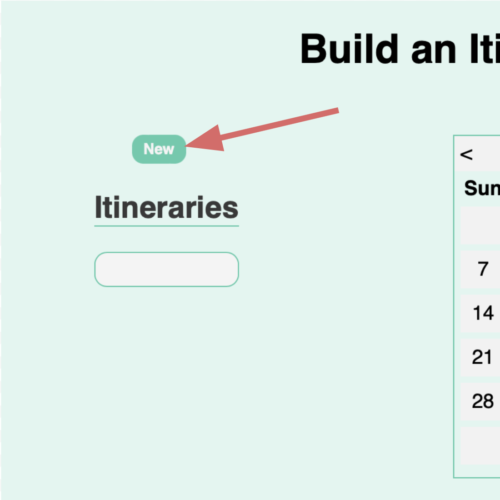
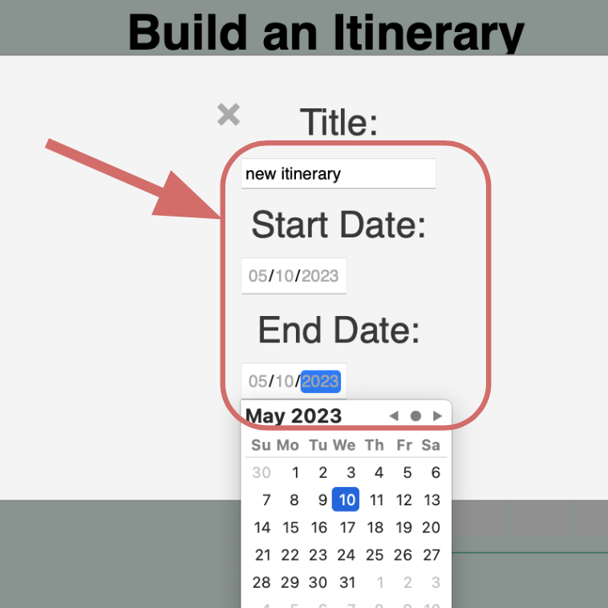

- Q: What is the goal in using WanderWise?
A: WanderWise provides a consolidated platform for users to be able to organize and plan their travel experiences. You can use WanderWise to connect with other nomads, find recommendations for your trip, and plan ahead or last-second!
- Q: Why can I not create a new post?
A: A user must be logged in to a valid WanderWise account to be able to access forum interaction.


- Q: Why can I not view my friend's accounts or other profile information pertaining to other users?
A: Although WanderWise keeps track of user's individual posts and itineraries, anonymity is a key component to WanderWise's safety protocol. Users have limited access to information of other users in order to maintain this security and anonymity.
- Q: How do I make plans through the itinerary builder?
A: A user must be logged in to a valid WanderWise account to be able to create and view itineraries. Once logged in, click "new" and fill out the required information. Your itinerary list will then be displayed oon the left.
  - Q: Where can I access the source code for WanderWise's design?
A: Users should keep their grubby little hands to theemselves, but if you really need to access the source code it is widely available at the following:
WanderWise Github Repo